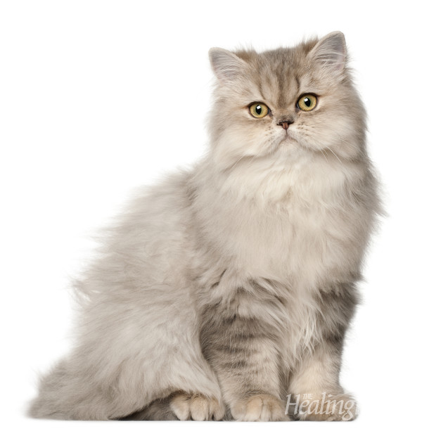
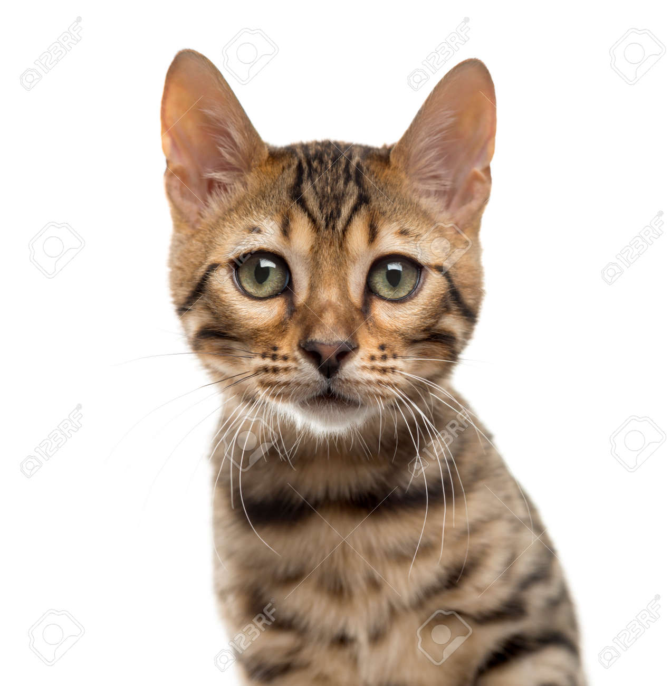

고양이 품종
페르시안

이란의 옛 나라인 페르시아 제국의 상형문자에 나타난 것에 의하면 사막을 이동하며 무역을 하던 캐러밴들이 무역상품에 긴 털을 가진 고양이가 포함되어 있었고 고양이의 기원지에 따라 이름을 ‘페르시안’이라 불렀다고 합니다.
이 상형문자에 나온 고양이가 현재의 페르시아고양이의 선조라면 기원은 B.C 1524년보다 훨씬 이전의 일일 것으로 추정됩니다. 18세기 유럽에 전해진 이후 1899년 영국에서 고양이 쇼에 등장하였고, 19세기 말 미국으로 전해졌습니다.
벵골

- 벵골 고양이는 국내 고양이, 특히 점박이 이집트 마우와 아시아 표범 고양이의 잡종으로 만든 길 들여진 고양이 품종벵골 고양이는 국내 고양이, 특히 점박이 이집트 마우와 아시아 표범 고양이의 잡종으로 만든 길 들여진 고양이 품종
- 학명: Felis catus × Prionailurus bengalensis
- 상위 분류: 고양이
- 출생지: 미국
- 분류군: 잡종